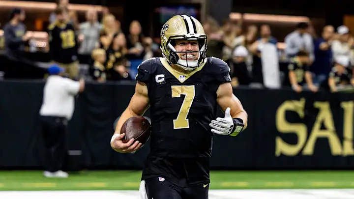
Fuck this guy! ^
Neil beat me by 31.64 (146.40-114.76). Taysom had 41.52 and Neil tried to pick up Knox, how had 8.00, a 33.52 difference! GG Neo.
~~Matchup of the Week~~
Week 12 Matchup Review
(#ranking is based on league standings)
#3 Won’t You Be My Nabers (7-4) vs. #7 Chris’ Cocaine Train (5-6) Chris is on a huge run but runs into the team that’s put up the biggest weeks, coming off a 170-pointer. He’s very much in the mix with a win this week, but time is running out.
What to watch: * Joe Mixon has been a touchdown machine this year when healthy. If that keeps up, we’re all in trouble. * Chris is riding the hot hand with Bo Nix at QB over Daniels - it paid off last week and looks like a nice matchup against LV (hopefully he’s right but maybe still loses).
#4 Josh Allen’s Fat Hog (6-5) vs. #8 Sweet Brotha Numpsay (5-6) Square in the middle, it’s a must win for Pangy, but seems like it’d be tough to drop a game here for Neil, too.
What to watch: * Will Nico Collins return to his early-season form in his second game back for Neil? * For Pangy, Josh Downs looked solid last week even with AR back at the helm. Sketchy, but we’ll see how it goes.
#5 Jahmyr We Go Again (6-5) vs. #6 Swift Love Kelce (6-5) Another one in the middle, ugh, I’m tired… and stressed out about one. I feel like I’m heading in the wrong direction while Kris is going in the right one. We’ll see.
What to watch: * Kris is starting both of the Washington RBs, including Ekeler in a revenge game on me. * Jake turns back to Anthony Richardson. Yeesh.
What else?
1 plays #10 and #2 plays #9.
📈 Week Twelve Power Rankings 📈
1. 8==D ⬆️
8-3, W3, PF: 1487.20, $7 FAAB
Back in the number one spot after taking Andy down. This team is scary to look at when the lineup is healthy.
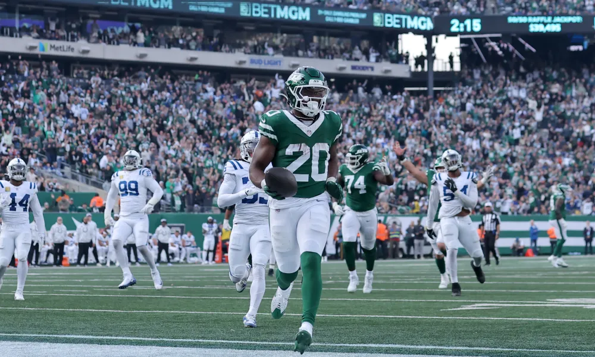
2. Won’t You Be My Nabers ⬆️⬆️
7-4, W1, PF: 1476.06, $78 FAAB They’re back - Mixon and Matt look as dangerous as ever, with the assassin, Bowers looming in the shadows.
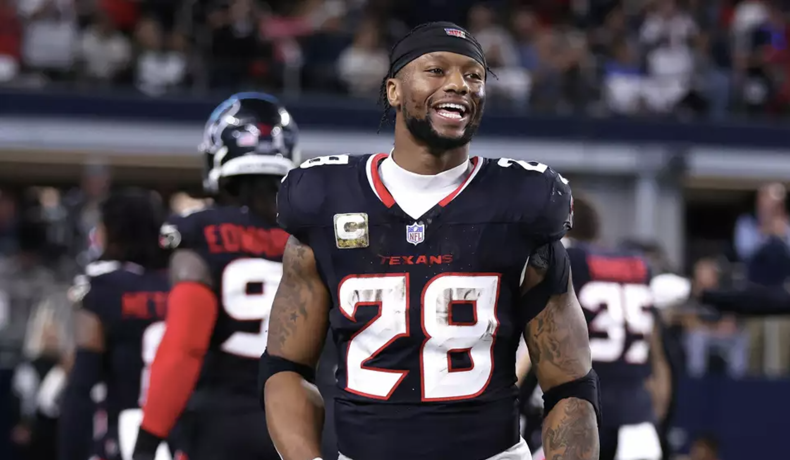
3. Mr. Turna 2-to-uh-4 ⬇️⬇️
8-3, L1, PF 1452.16, $0 FAAB A loss doesn’t set Andy too far back, with the third-highest scoring output. It looks highly unlikely that he could miss the playoffs, so it’s mostly just a seeing thing at this point. Not as scary to me, but just guys that get the fucking job done (St. Brown, Lamar, McBride, Hubbard)
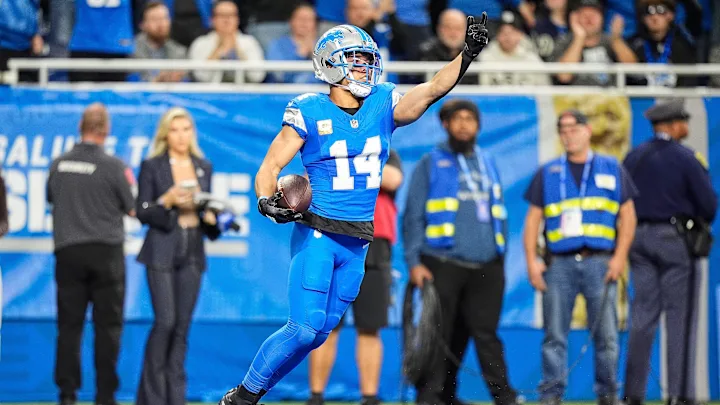
4. Josh Allen’s Fat Hog ⬆️
_6-5, W1, PF: 1339.24, $17 FAA_B
AJ Brown’s lack of production has been strange, but if Taysom can keep doing that, Neil will be looking real nice.
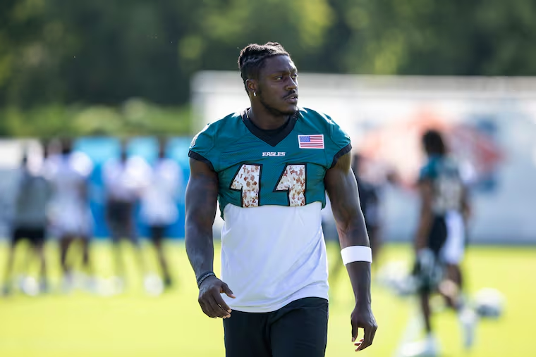
5. Chris’ Cocaine Train ⬆️⬆️⬆️
5-6, W4, PF: 1314.26, $3 FAAB
He’s put it all on the line, and it’s turned into four straight wins. Chris has one of the deepest lineups in the league, but when I see it this week, I wonder if it’ll be too tricky to navigate down the stretch. Looks like he’s riding the hot hands this week with Daniels, Swift, Ridley and JT on the bench.
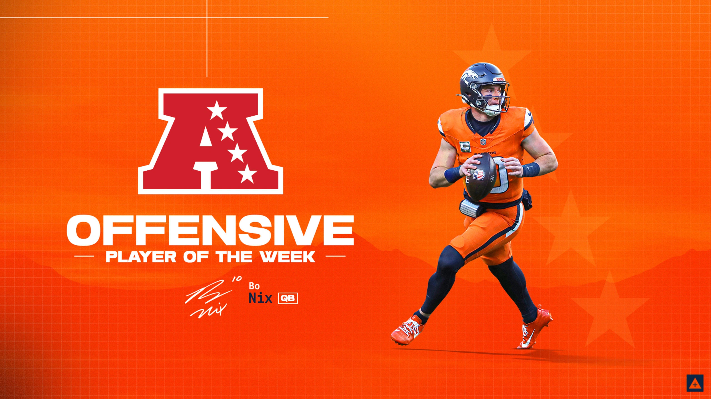
6. Swift Love Kelce ↔️
6-5, W2, 1204.36, $2 FAAB
He may not the rules of our league. But he’s not to be underestimated this year. Coming off two straight wins, Kris looks to the double-Commanders backfield for a Lions-RB-like performance against the dilapidated Cowboys.
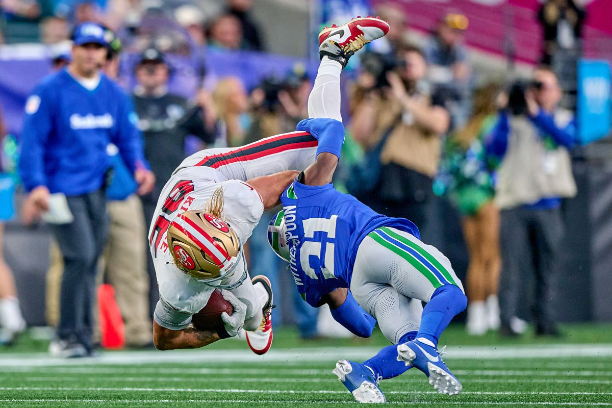
7. Jahmyr We Go Again ⬇️⬇️⬇️⬇️
6-5, L1, PF 1328.24, $9 FAAB
I’ve leaned heavily on the Niners the last two weeks and that hasn’t gone so well. Now Brock is out, and I turn to AR, with a hope and a prayer that Deebo and CMC can still produce.
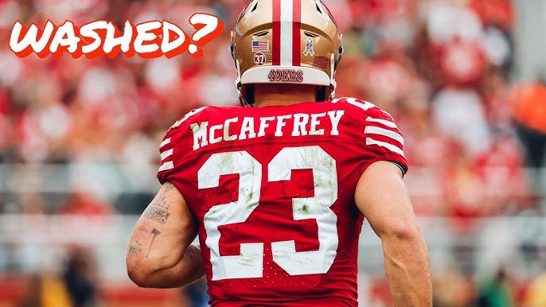
8. Sweet Brotha Numpsay
5-6, L4, PF 1213.82, $1 FAAB Pangy’s holding onto two things: a hope for the playoff and his $1.
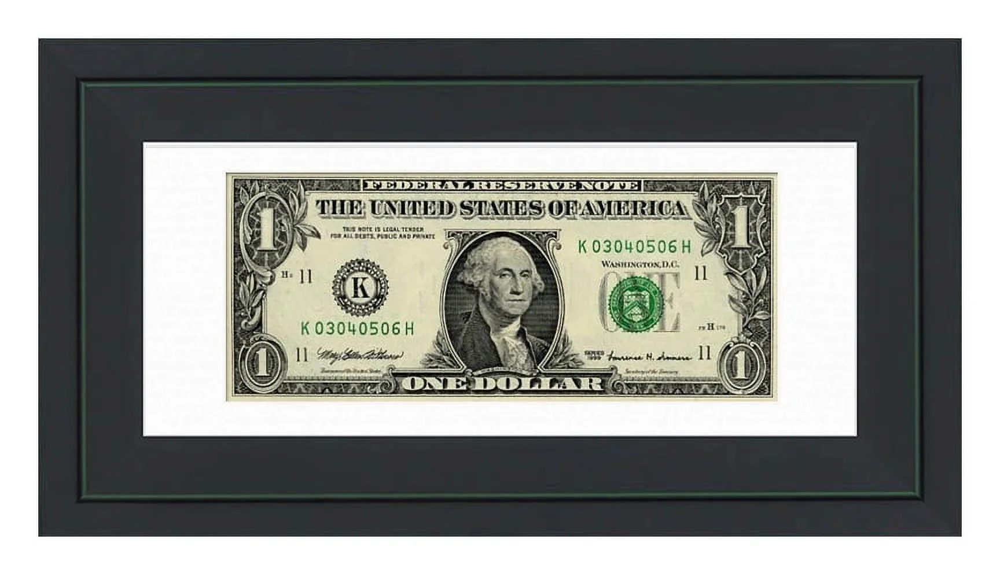
9. Griddy Griddy Bang Bang ↔️
3-8, L3, PF 1224.82, $8 FAAB Just jockeying for a position down here.
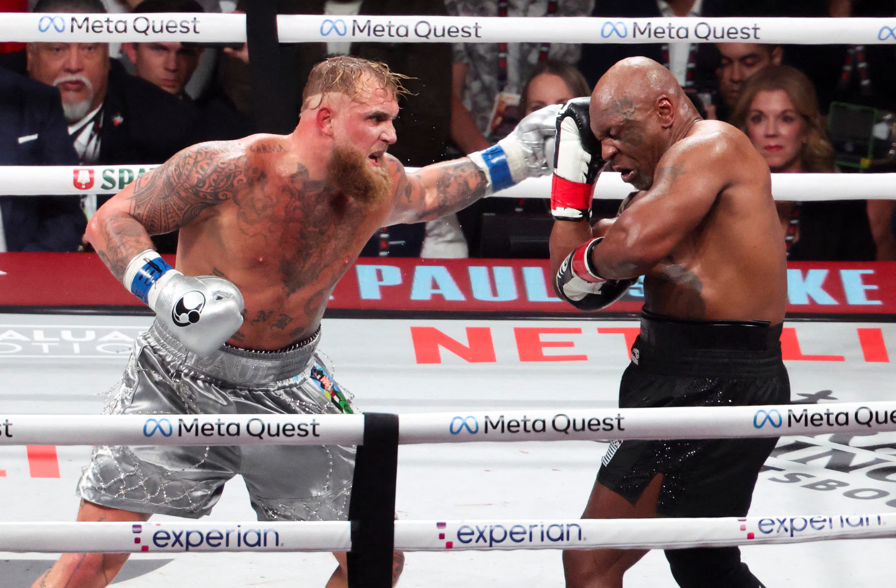
10. Above and Bijan ↔️
1-10, L2, PF 1167.94, $21 FAAB 💩💩💩💩💩💩💩💩🍀💩💩
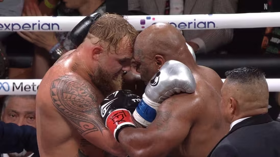
Good luck to everyone besides Kris! 🏌️♂️
Do you want to know what my favorite part of the game is? The opportunity to play.
– Mike Singletary
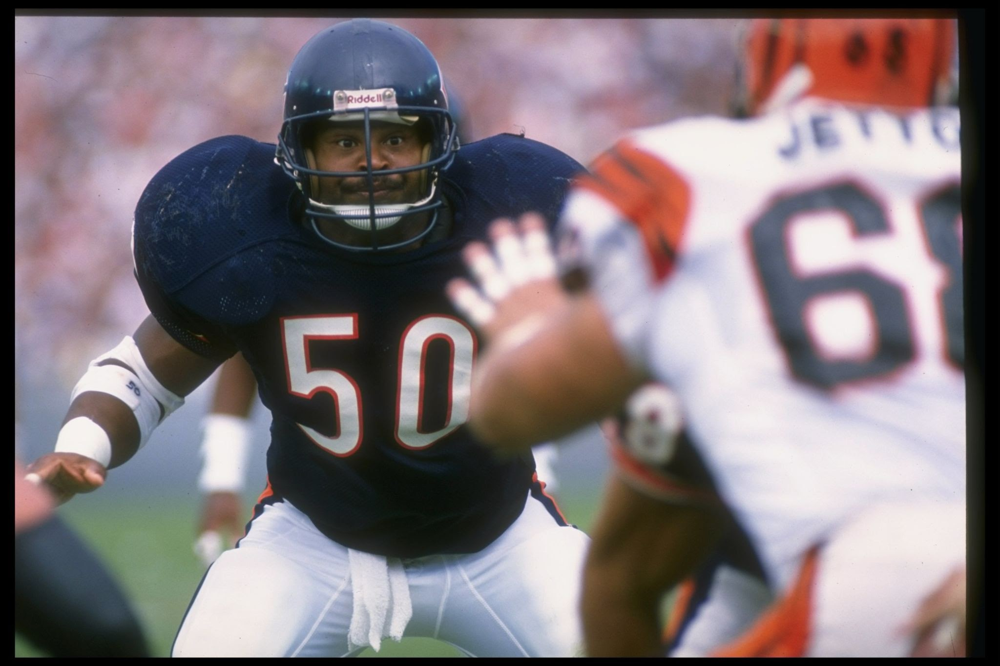